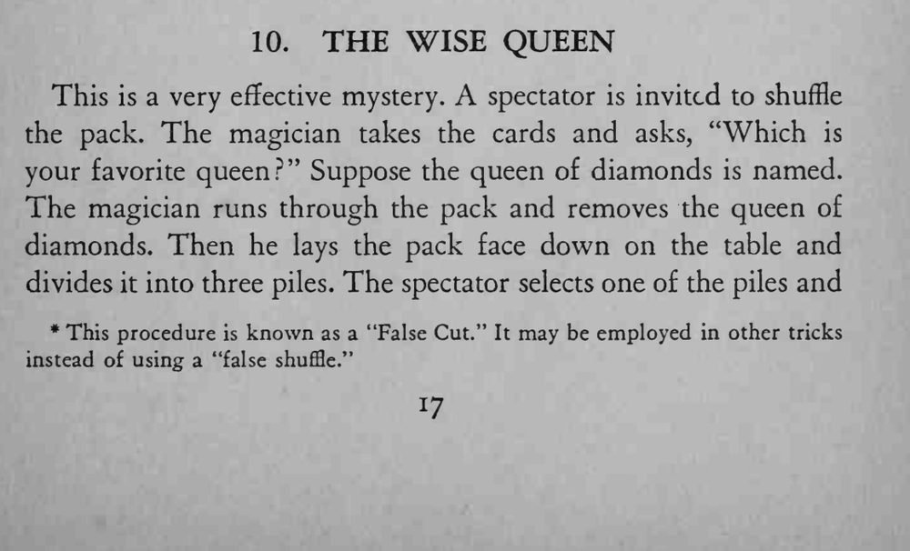
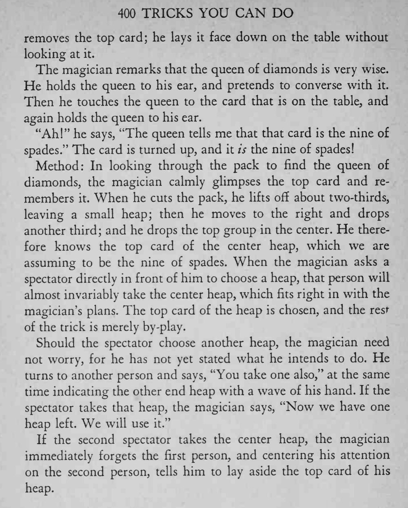

魔术师请观众说出最喜欢的一张皇后，把那张 Q 贴在耳边“听”它说话，然后准确报出桌上那张牌是什么。
关键只在那一眼记下的顶牌，观众挑哪一叠都能靠说辞自然带过。


This is a very effective mystery. spectator is invited to shuffle the pack. The magician takes the cards and asks, "Which is your favorite queen?" Suppose the queen of diamonds is named. The magician runs through the pack and removes the queen of diamonds. Then he lays the pack face down on the table and divides it into three piles. The spectator selects one of the piles and * This procedure known as a "False Cut." It may be employed in other tricks instead of using a "false shuffle." removes the top card; he lays it face down on the table without looking at it. The magician remarks that the queen of diamonds is very wise. He holds the queen to his ear, and pretends to converse with it. Then he touches the queen to the card that is on the table, and again holds the queen to his ear. "Ah!" he says, "The queen tells me that that card is the nine of spades." The card is turned up, and it is the nine of spades! Method: In looking through the pack to find the queen of diamonds, the magician calmly glimpses the top card and remembers it. When he cuts the pack, he lifts off about two-thirds, leaving a small heap; then he moves to the right and drops another third; and he drops the top group in the center. He therefore knows the top card of the center heap, which we are assuming to be the nine of spades. When the magician asks a spectator directly in front of him to choose a heap, that person will almost invariably take the center heap, which fits right in with the magician's plans. The top card of the heap is chosen, and the rest of the trick is merely by-play. Should the spectator choose another heap, the magician need not worry, for he has not yet stated what he intends to do. He turns to another person and says, "You take one also," at the same time indicating the other end heap with a wave of his hand. If the spectator takes that heap, the magician says, "Now we have one We heap left. will use it." If the second spectator takes the center heap, the magician immediately forgets the first person, and centering his attention on the second person, tells him to lay aside the top card of his heap.